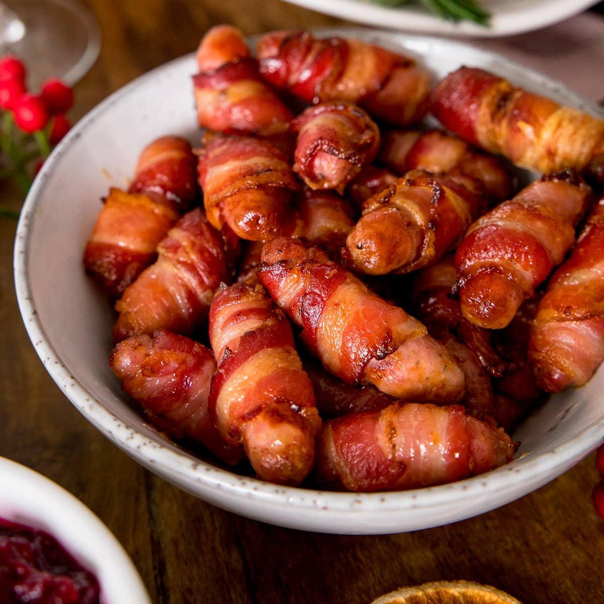

Pigs in Blanket

Description
For these sausage pigs in a blanket, skip the maple-flavored sausage and wrap sausage links in cinnamon rolls
instead. You're welcome! You'll end up with 2 extra rolls so you can either slap them on the baking sheet or add
4 extra sausage links to the mix, as you choose. Serve with eggs, fruit, and OJ for a complete meal.
Ingredients:
- cooking spray
- 1 (12 ounce) tube refrigerated cinnamon rolls with cream cheese icing (8 count)
- 1 (9.6 ounce) package fully cooked sausage links, such as Jimmy Dean® Original Fully Cooked Pork Sausage
Links (12 count)
Steps:
- Preheat the oven to 400 degrees F (200 degrees C). Spray a baking sheet with nonstick cooking spray.
- Unroll 6 cinnamon rolls and cut them in half lengthwise. Set icing aside.
- Wrap 1 roll half around 1 sausage link and place on the prepared baking sheet. Repeat with remaining rolls
and sausage links.
- Bake in the preheated oven until golden, about 13 minutes. Transfer to a serving plate and drizzle with
reserved icing if desired.